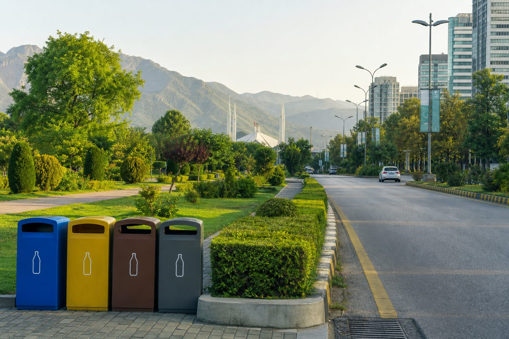
Mülltrennung & Pfand
Welcome. Today we learn how Germany sorts waste as a resource — and how Pakistan can adapt the same discipline at home, in streets, and in law.
Objective 01
Understand every German bin + Pfand loop
Objective 02
Map a 4-phase Pakistan adaptation roadmap
Speaker
Ring Green Pakistan · Session Facilitators
69%+
Municipal waste recycled
Europe’s recycling leader by household discipline, not slogans.
98%
Pfand bottle return
Deposit-refund makes returning a bottle more natural than throwing it.
The core philosophy
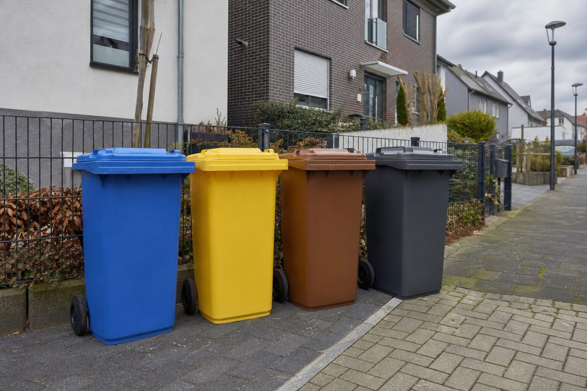
Color-coded curbside bins · GermanyClean fibre only. Grease and food kill the recycling loop.
Allowed ✓
Forbidden ✕
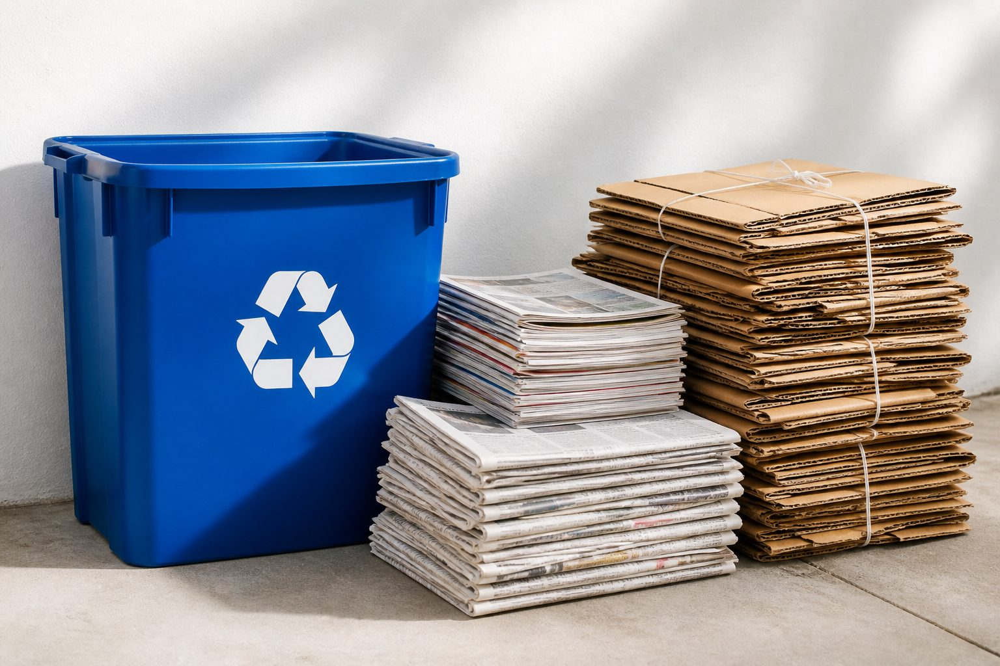
Plastic, metal, and composite packaging — empty, not sparkling-clean.
Plastic packaging
Metal packaging
If mostly clean
Composite cartons
Processing rule — “spoon-clean”
Empty the yogurt. Scrape the can. Do not waste litres of water rinsing. A spoon-clean pack recycles; a pack still full of food contaminates the whole yellow stream.
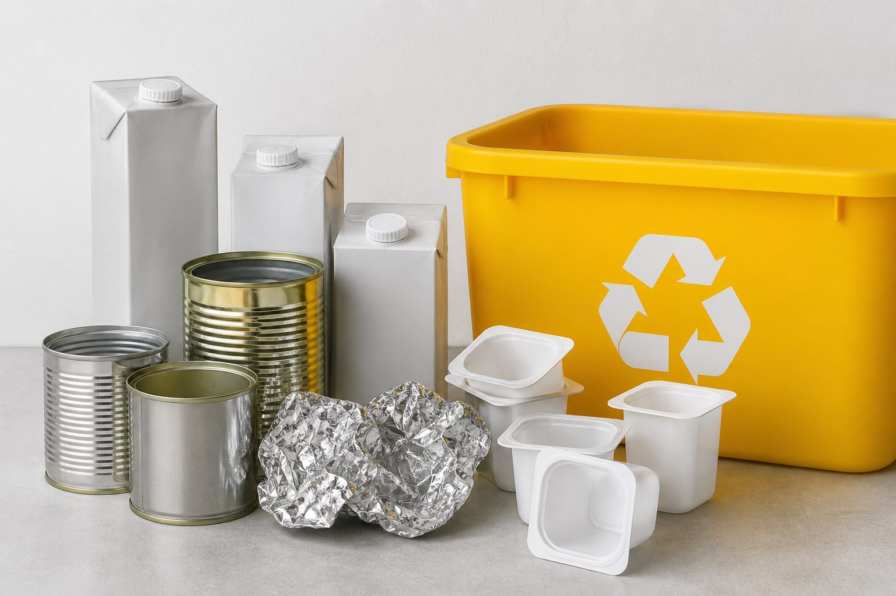
Empty packaging onlyKitchen and garden leftovers become compost and biogas — if no plastic enters.
Allowed
Strict rule
Absolutely NO plastic bags.
Even bags labelled “compostable / bio-plastic” are forbidden in most German Biotonne systems. Wrap scraps in newspaper or paper bags only.
Environmental value
Loop
Kitchen → Biotonne → municipal composting + biogas power. Organic waste is fuel and fertiliser, not landfill stink.
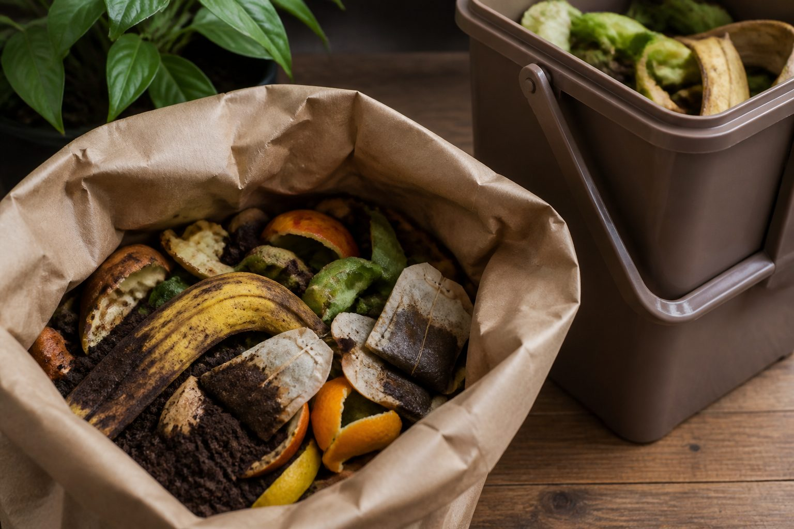
What cannot be recycled. Success = this bin stays almost empty.
Allowed (non-recyclables)
Final destination
Restmüll is burned in controlled plants. Heat warms homes. It is still the most expensive and least circular path — so Germans treat a full gray bin as a sorting failure, not a normal week.
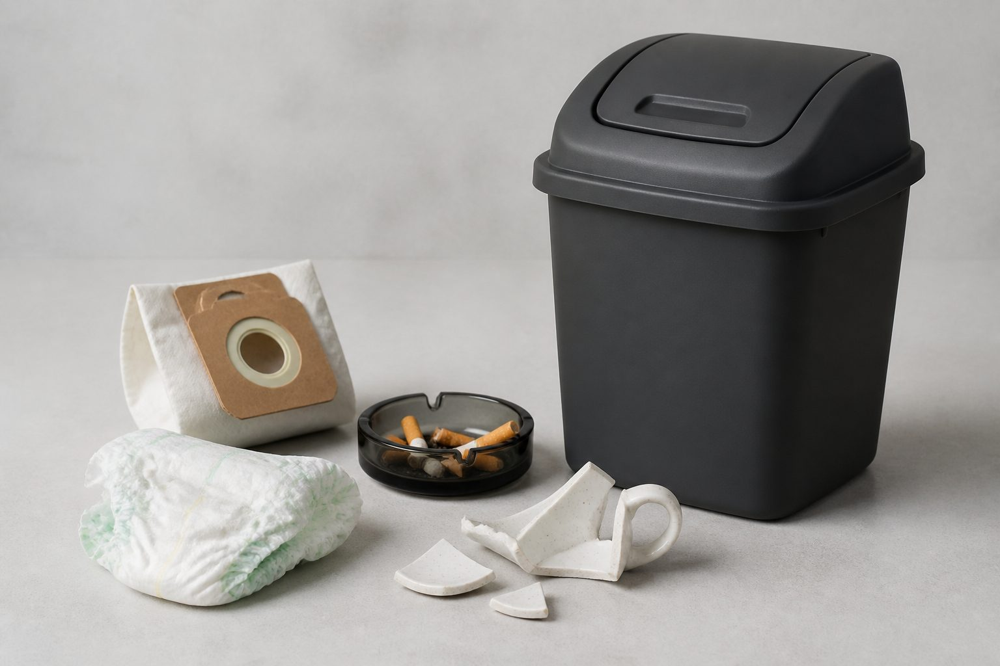
Column 1
Clear bottles and jars. Colour contamination ruins the melt.
Column 2
Green plus blue and other mixed colours in most cities.
Column 3
Brown beer and medicine-style bottles (household only).
Household vs special glass
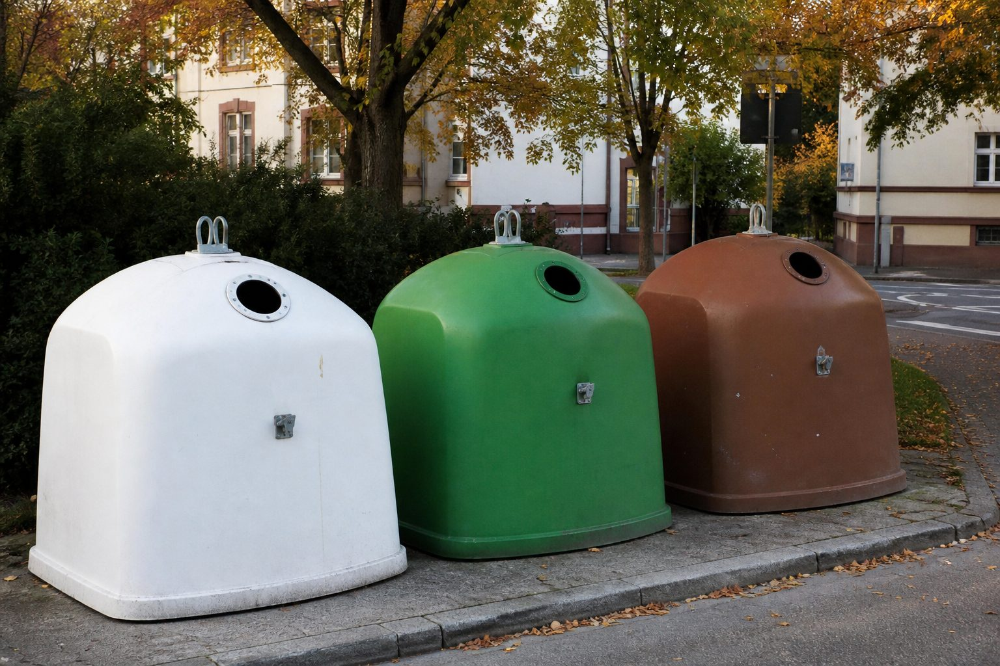
Weiß · Grün · Braun1
Pays deposit at checkout
2
Drinks, keeps the bottle
3
Pfandautomat slot
4
Voucher / refund
Single-use · Einweg
€0.25
PET bottles & cans with the DPG logo. High deposit = almost nobody litters a 25-cent bottle.
Multi-use · Mehrweg
€0.08–€0.15
Heavy plastic or glass beer/water bottles, washed and refilled up to 50 times.
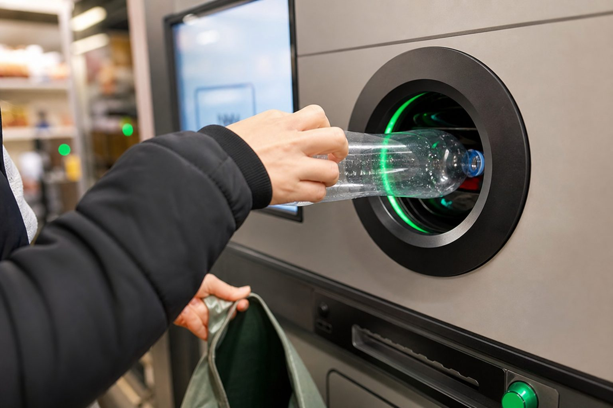
Pfandautomat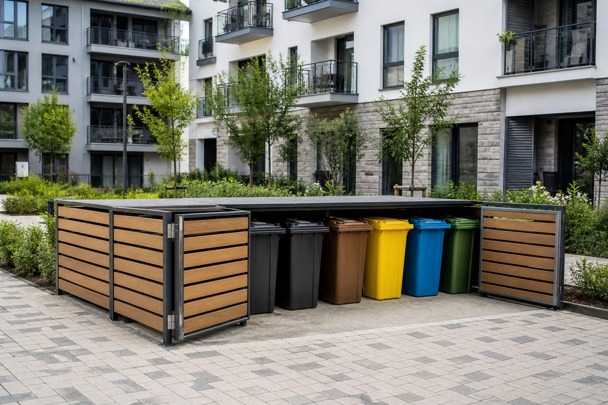
Central bin yardHow it works
Multi-family houses share one bin courtyard. Collection is a building service, not a private hobby.
Shared responsibility
Citizen behaviour credit
Repeat violations damage the residential record, risk lease termination, or trigger municipal citations. Sorting is part of being a good tenant — like paying rent on time.
Government mechanism
Collection rules
Wrong materials in the bin → workers leave a warning sticker and refuse collection until it is re-sorted. The smell in July is the real fine.
Illegal dumping · Sperrmüll / Wildmüll
€50 → €2,500+
Range depends on the federal state and the volume dumped. Fly-tipping is not a shortcut; it is a ticket.
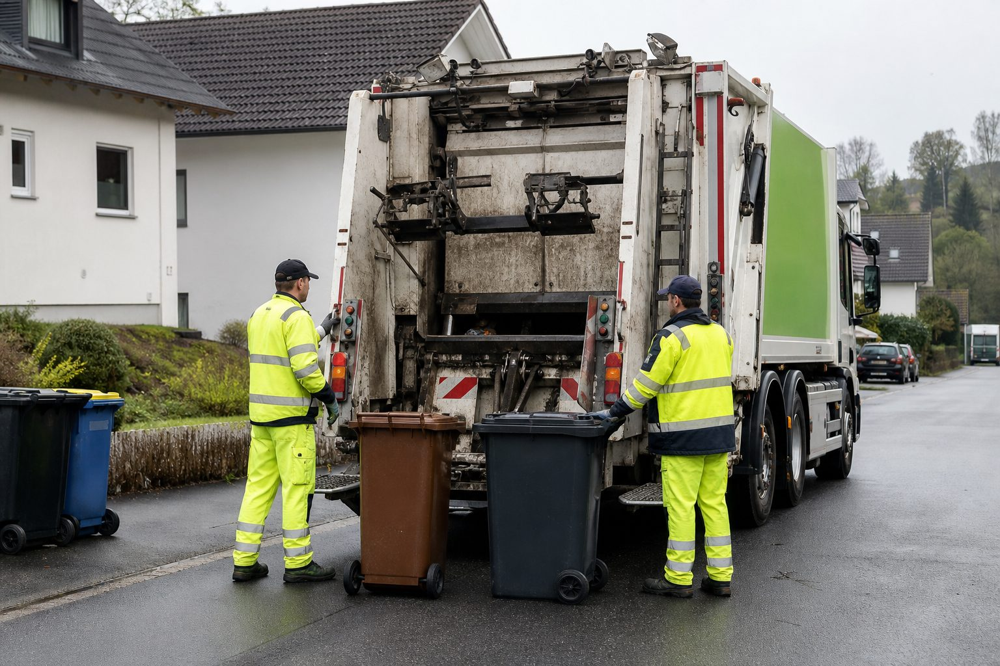
Dedicated collectionKitchen caddies: paper, packaging, organic, residual. The factory starts at the chopping board.
Curbside on the Abfallkalender day only. Wrong day = full bin and a missed truck.
Separate dedicated trucks per stream. No mixed “one lorry does all.”
Optical sorting plants + reverse vending. Machines catch what hands missed.
Compost, plastic pellets, glass remelt, bottle refill. Waste becomes inventory.
Mixed dumping
Households bag everything together. Value of plastic and glass dies on contact with wet waste.
Landfills & nullahs
Unorganized dumps and drain blockages. Monsoon turns trash into urban flooding.
Open burning
Neighbourhoods burn piles. Toxic smoke is a public-health invoice we pay in hospitals.
Informal risk
Kabbadiwalas and waste pickers work without PPE in contaminated heaps — the green jobs we have, treated as invisible.
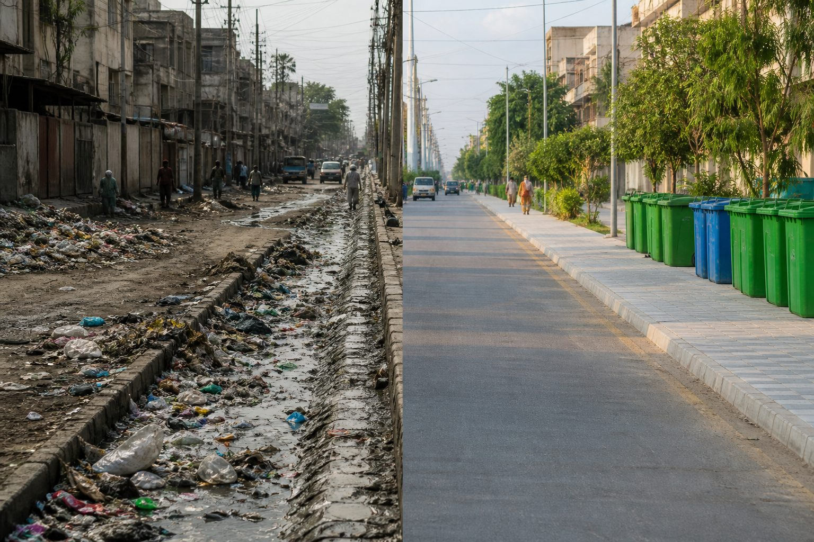
Contamination = lost recyclingGreen = organic / wet.
Blue = dry recyclables (plastic, paper, metal, glass).
This is Mülltrennung at Pakistani scale. Master two streams before four.
Neighbourhood collection points — Lyari / Karachi-style pilots — where sorted bags meet a scheduled pickup, not a random heap.
Bring scrap dealers into official city recycling centres: ID, fair rates, PPE, clean buy-back. They are already our sorting plants.
Small cash refund for PET bottles at kiryana / grocery stores. Even Rs 5–10 per bottle trains the same muscle as €0.25.
Environmental
Economic
Health
Energy
Monsoon flooding
Polythene and mixed trash jam drains. Cities drown on 40mm of rain because gutters are landfills with a lid.
Soil & groundwater
Open dumps leach into wells and fields. Contamination is slow, then permanent.
Health budget
Dengue wards, asthma, diarrhoea — sanitation failure is a hospital invoice the poor pay first.
Land value & tourism
Streets of burning heaps destroy neighbourhood prices and any claim to “visit Pakistan.”
Penalties if the rule is applied
Incentives if a community applies
01
Two bags: organic scraps vs dry plastics/paper/metal. Teach the cook and the youngest sibling the same rule.
02
No wrapper in the gali nala. Educate the street: a blocked drain is a shared flood, not a sweeper’s problem.
03
Advocate UC / municipal colour bins at the chowk and the school gate. Take photos. Follow up.
04
Join neighbourhood cleanup drives. Formalize one kabbadi contact as your lane’s buy-back point.
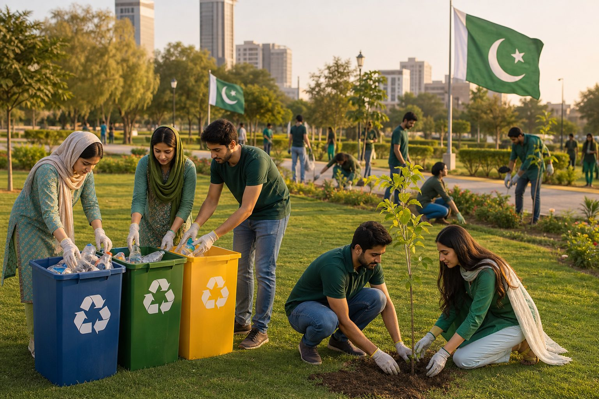
Ring Green Pakistan
Small daily actions lead to country-wide transformation. Let’s make Pakistan clean and green.
Q&A
Questions from the floor — bins, Pfand, and your gali pilot
Connect
@RingGreenPakistan · session notes in the group
Thank you
4th Session · Mülltrennung & Pfand